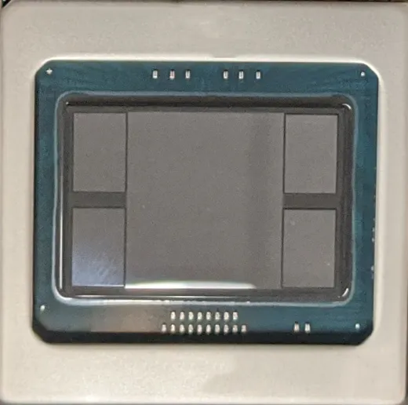
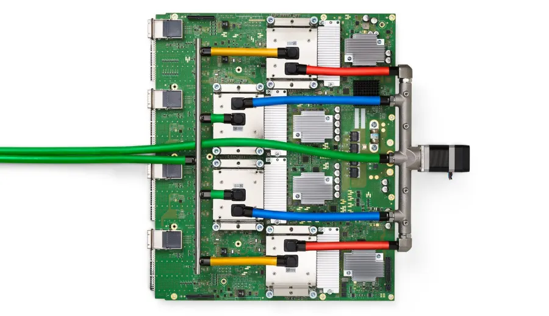
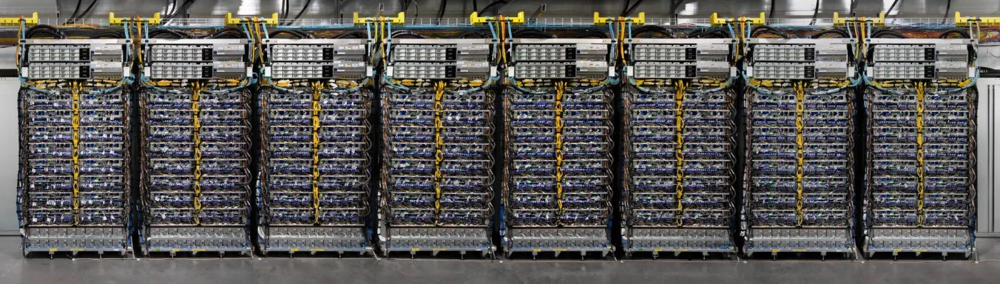

Every accelerator that is not an NVIDIA GPU is a bet on two choices the GPU keeps general: where the weights wait while the matrix units use them (HBM behind a scratchpad, SRAM spread over hundreds of chips, a whole uncut wafer) and how many chips share one fast fabric (8 to 9,216). Underneath most of them is one trick, the systolic array, which fetches each operand once per tile instead of once per multiply-add.
Log scales. Memory panel: memory on one chip, coloured by where the weights wait (HBM or on-chip SRAM); the dashed line is Llama 3.1 70B's weights in bf16 (141.1 GB), so a bar left of it cannot hold the model on one chip. Fabric panel: chips joined by the fastest fabric without going through the data-centre network; a range runs from one board to the largest rack or pod. vendor
Sources are in each section: B200 (180 GB, 8 per HGX board, 72 per NVL72 rack, the root's Chip atlas), TPU7x (192 GiB, 9,216 per pod, section 3), MI355X (288 GB, 8 per board; Helios racks 72 MI455X, section 5), Trainium2 (96 GiB, 16 per instance, 64 per UltraServer; Trainium3 144, section 6), Groq 3 LPU (128 GB per 256-chip LPX rack, section 7), Cerebras WSE-3 (44 GB, one wafer, section 8), Gaudi 3 (128 GB, 8 per node, section 9). GiB converted to GB: 192 GiB = 206.2 GB, 96 GiB = 103.1 GB (src/recompute.py).
The running example. The root page, Topic: hardware, follows one Llama 3.1 8B training step down to NVIDIA GPUs; this page asks how the other machines run the same work. Its example is one matrix multiply from that step: the gate projection of one layer for one 8,192-token sequence, activations (8,192 × 4,096) times weights (4,096 × 14,336), 9.62 × 1011 FLOPs.
| Where the multiply happens | Where the weights wait | How chips join | The bet | |
|---|---|---|---|---|
| NVIDIA GPU | Tensor cores inside ~150 SMs, fed by threads | HBM, through caches and shared memory | NVLink switches (8 to 72), then InfiniBand or Ethernet | General purpose, and the software everyone targets first |
| Google TPU | 2 to 8 big systolic arrays (MXUs) per chip, scheduled by a compiler | HBM, staged through a software-managed scratchpad | Direct links in a 2D or 3D torus; cubes rewired by optical switches; up to 9,216 chips | Specialise for matmuls and build the pod as one machine |
| AMD Instinct | Matrix cores in 256 to 304 CUs on 8 chiplets | HBM (192 to 288 GB), behind a 256 MB cache | 8 GPUs fully connected, no switch | More memory per GPU at a lower price |
| AWS Trainium | 128 × 128 systolic arrays, 8 per chip | HBM, staged through a scratchpad | 16-chip 2D torus (Trn2); switches up to 144 chips (Trn3) | Own the whole stack and undercut on price |
| Groq | 320 × 320 matrix arrays, every cycle planned by the compiler | On-chip SRAM across hundreds of chips | Direct links, scheduled by the compiler | Never touch DRAM during decode |
| Cerebras | 900,000 tiny cores on one uncut wafer | 44 GB SRAM on the wafer, or streamed from MemoryX in training | Rarely needed: one wafer is one chip | Make the chip as big as the wafer |
The GPU row is for orientation only; the GPU itself, and AMD's chip from the CU up, are on GPU architecture. Gaudi, SambaNova, Etched and in-house chips are in section 9. Peaks, memory and prices side by side are in the root's "Chip atlas" tab.
You need: a matrix multiply seen as tiles, and why decode is limited by memory bandwidth (the root, sections on numbers and memory). Programming TPUs (JAX, XLA, Pallas, sharding) is Topic: jax-and-tpu; programming GPUs, including AMD's ROCm, is Topic: cuda-and-gpu-programming.
The problem. Take the running example: the gate projection of one Llama 3.1 8B layer for one 8,192-token sequence, an 8,192 × 4,096 matrix of activations X times a 4,096 × 14,336 weight matrix W. That is 2 × 8,192 × 4,096 × 14,336 = 9.62 × 1011 FLOPs derived, but only 34 million activations and 59 million weights. Every weight is used 8,192 times (once per token) and every activation 14,336 times (once per output column). The arithmetic is cheap; what costs energy and time is fetching the operands each time they are used.
How cheap? Mark Horowitz's table of rough energy costs at 45 nm (Horowitz, ISSCC 2014, Figure 1.1.9; old process, so read the ratios, not the absolute numbers): a 16-bit floating-point multiply costs 1.1 pJ and a 32-bit add 0.9 pJ, so one bf16 multiply with an fp32 accumulate is about 2 pJ derived. A register-file access costs about 6 pJ, a 64-bit read from an 8 KB SRAM 10 pJ, from a 1 MB SRAM 100 pJ, and from DRAM 1.3 to 2.6 nJ. A programmable core also pays about 70 pJ per instruction to fetch and decode it. So fetching both operands from a register file costs more than the multiply-add itself, and the designer's question is: how many times is each number fetched from storage, per multiply-add?
How a systolic array answers it. A systolic array is a grid of identical multiply-accumulate cells, each wired only to its neighbours. In the weight-stationary layout the TPU uses, each cell is loaded with one weight, which then stays put. A row of activations enters from the left edge and moves one cell to the right per clock cycle; at each cell it is multiplied by that cell's weight, and the product is added to a partial sum that moves one cell down per cycle. A finished dot product leaves the bottom of each column. Because row k must meet the partial sum coming from row k − 1, each row of input starts one cycle later than the row above (the skew), so the work moves through the grid as a diagonal wave. The TPU v1 paper: "As reading a large SRAM uses much more power than arithmetic, the matrix unit uses systolic execution to save energy by reducing reads and writes of the Unified Buffer ... data flows in from the left, and the weights are loaded from the top. A given 256-element multiply-accumulate operation moves through the matrix as a diagonal wavefront" (Jouppi et al. 2017, section 2).
The same 80 multiply-adds: the array is slower here but reads storage 36 times instead of 160
Below, one 5 × 4 by 4 × 4 matrix multiply (80 multiply-adds) on two machines with 16 multiply-add units each: a 4 × 4 systolic array, and 16 scalar lanes that each own one output and fetch both operands from a register file every step (as a vector unit or a GPU's CUDA cores would). Predict which finishes first, then step through both.
Small integers, so every partial sum can be read. Weights load one row per cycle, as in TPU v1. Energy figures are Horowitz's 45 nm, an illustration, not a measurement of any chip.
The animation runs the page's own cycle-level simulator, a port of src/sim/systolic.py, which checks 7 shapes against the exact product and the cycle formula below (and the page's JavaScript against the Python on all of them). TPU v1 needed 256 cycles to shift a tile into its 256 × 256 array (Jouppi et al. 2017).
What it shows. On this tiny problem the array is slower: 15 cycles against 8, because the wave needs time to fill the array and drain out of it, and two thirds of the cell-cycles are idle. But it read storage 36 times against 160. The fill and drain cost a fixed number of cycles per tile, and the reads saved grow with the matrix, so the trade only pays at scale, which is exactly where matrix multiplies in training live.
A big matrix multiply is cut into tiles the size of the array. While one tile streams, the next tile's weights shift in behind it (double buffering), so in steady state each tile costs max(M, R) cycles on an R × R array, and the fill and drain are paid once. For the running example on a 128 × 128 array that is 32 × 112 = 3,584 tiles, each streaming 8,192 rows; reads per multiply-add fall to 1/128 + 1/8,192 = 0.0079 (each activation read once per 128 output columns, each weight once), about 250 times fewer than the scalar lanes' 2 derived.
Predict first: the running example on a 128 × 128 array is close to 100%. What happens with 8 tokens (decode), or with K = N = 130? Then press the presets.
Utilisation = useful multiply-adds / (R2 × cycles) from the tiled model in src/sim/systolic.py, with weights double-buffered and shifted in one row per cycle (an assumption taken from TPU v1, which needed 256 cycles per tile; Google does not publish the load rate of later MXUs). Real chips add HBM limits, several arrays per chip and compiler choices this model leaves out; it shows the shape effects only.
Is a GPU tensor core a systolic array? It solves the same problem at a smaller scale: one instruction multiplies a small tile (m16n8k16, a 16 × 16 by 16 × 8 product, in the PTX ISA) with operands fetched once, so it also divides fetches per multiply-add by the tile size. NVIDIA does not publish the circuit, so whether it is "systolic" is not stated; the reuse factor is what matters. Tensor-core instructions belong to Topic: cuda-and-gpu-programming, their generations to GPU architecture. Trainium's tensor engine (section 6) and Gaudi's matrix engines (section 9) are systolic arrays too, and Groq's 320 × 320 arrays (section 7) attack the same problem.
For shapes that fit a small array, the page's simulator runs every cell, every cycle; each colour is one row of X moving right and down as a diagonal band. The original paper on systolic arrays is H. T. Kung, "Why systolic architectures?" (IEEE Computer, 1982; in Further reading).
A GPU has about a hundred small cores (SMs) each running thousands of threads. A TPU chip has one or two big cores, called TensorCores, and no threads at all. Each TensorCore holds:
Sources: How To Scale Your Model, TPUs (MXU, VPU, VMEM, 22x); TPU v4 paper (v4 VMEM and CMEM, SparseCore, 4 per chip); v5p and TPU7x docs (SparseCores). Chips cited by their Cloud names: v5e, v5p, v6e (Trillium), TPU7x (Ironwood).


No caches, no warps, no occupancy. The biggest difference from a GPU is who decides what is on chip. A GPU has hardware caches and hides memory latency by switching between thousands of threads; a TPU has a scratchpad and no threads, so the compiler (XLA) decides, ahead of time, every copy from HBM into VMEM and every instruction, and pipelines them so the MXU never waits. Performance on a TPU is a compiler problem, not an occupancy problem. That is also why shapes must be static: the schedule is computed for one shape, and a new shape means a new compilation. How XLA schedules the chip, and Pallas kernels for when it is not enough, are on TPU programming and performance (Topic: jax-and-tpu).
Two TensorCores, one chip. On v4, v5p and v6e the chip's cores share memory and appear to software as one accelerator with twice the FLOPs ("megacore"). Ironwood is built from two chiplets (two dies in one package), each with its own TensorCore, joined by a high-bandwidth die-to-die link instead (scaling book; TPU7x docs).
If the description above is right, the peak follows by arithmetic: peak = cores × MXUs per core × side2 multiply-adds × 2 FLOPs × clock. Where Google published every factor, it reproduces independently:
| Chip | Cores × MXUs × side | FLOPs per cycle | Clock | Computed | Published |
|---|---|---|---|---|---|
| v1 (int8) | 1 × 1 × 256 | 131,072 | 700 MHz | 91.8 TOPS | 92 |
| v2 | 2 × 1 × 128 | 65,536 | 700 MHz | 45.9 TF | 46 |
| v3 | 2 × 2 × 128 | 131,072 | 940 MHz | 123.2 TF | 123 |
| v4 | 2 × 4 × 128 | 262,144 | 1,050 MHz | 275.3 TF | 275 |
| v5e | 1 × 4 × 128 | 131,072 | 1.5 GHz | 196.6 TF | 197 |
| v5p | 2 × 4 × 128 | 262,144 | not published | needs 1.75 GHz | 459 |
| v6e | 1 × 2 × 256 | 262,144 | not published | needs 3.5 GHz | 918 |
Sources: v1 to v3 from Jouppi et al., CACM July 2020, Table 1 (read from a public copy); v4 from the TPU v4 paper (two TensorCores, four 128 × 128 MXUs each, Table 4: 1,050 MHz, 275 TF); v5e, v5p and v6e peaks and core and MXU counts from the Cloud TPU docs (v5e, v5p, v6e); v5e's 1.5 GHz, v5p's four MXUs per core and v6e's 256 × 256 from the scaling book. Computed by src/recompute.py derived.
Google has built a TPU roughly every year or two since 2015, and since v5 in two tracks: an "e" chip (efficiency: one TensorCore, a 2D torus, 256-chip pods, cheaper per hour) and a "p" chip (performance: two TensorCores, a 3D torus, pods of thousands). Ironwood folds both into one chip.
| Chip | In use | Peak per chip | Memory, bandwidth | Largest pod | Power per chip | What changed |
|---|---|---|---|---|---|---|
| v1 | 2015 | 92 TOPS int8 | 8 GiB DDR3, 34 GB/s | single chip (4 per server) | 75 W TDP | Inference only; one 256 × 256 array; 28 MiB on chip |
| v2 | 2017 | 46 TF bf16 | 16 GiB HBM, 700 GB/s | 256 chips, 2D torus, 11.8 PF | 280 W TDP | Training: bf16, HBM, chips linked into a pod |
| v3 | 2018 | 123 TF | 32 GiB, 900 GB/s | 1,024 chips, 2D torus, 126 PF | 450 W TDP | Two MXUs per core; liquid cooling |
| v4 | 2020 | 275 TF | 32 GiB, 1,200 GB/s | 4,096 chips, 3D torus | 170 W mean measured | Optical circuit switches, 3D torus, 4 SparseCores, 128 MiB CMEM; 7 nm |
| v5e | 2023 | 197 TF | 16 GB, 819 GB/s | 256 chips, 2D torus | not published | The efficiency track |
| v5p | Dec 2023 | 459 TF | 95 GiB, 2,765 GB/s | 8,960 chips, 3D torus | not published | The performance track; fp8 accepted with no speed-up (459) |
| v6e Trillium | May 2024 | 918 TF | 32 GB, 1,638 GB/s | 256 chips, 2D torus | not published | 256 × 256 arrays; 4.7 times v5e per chip |
| TPU7x Ironwood | Apr 2025 announced | 2,307 TF bf16, 4,614 fp8 | 192 GiB, 7,380 GB/s | 9,216 chips, 3D torus, 42.5 EF fp8 | not published (pod "nearly 10 MW") | Two chiplets; first TPU with a fp8 speed-up; 6 times Trillium's memory |
Sources: v1 to v3 from CACM July 2020, Table 1 (v3 liquid cooling: its Figure 4); v1 also Jouppi et al. 2017 (deployed 2015, measured 40 W busy); v4 from the TPU v4 paper, Table 4 (deployed 2020; measured ASIC plus HBM power min/mean/max 121/170/192 W on production work; v3 175/220/262 W); v5e, v5p, v6e and TPU7x from the Cloud TPU docs as dated in the shared facts and the Ironwood post, Apr 9 2025. Google publishes TDP for no chip after v3.
All current TPUs beside every GPU, Trainium, Groq and Cerebras, per chip, server and rack, with prices: the root's Chip atlas tab; where each chip's speed comes from on a roofline: the root's "Roofline lab" tab.
A GPU cluster joins 8 or 72 GPUs through NVLink switches and everything else through network cards. A TPU instead has its own inter-chip interconnect (ICI) ports wired straight to its neighbours, 4 of them on a 2D torus (v2, v3, v5e, v6e) or 6 on a 3D one (v4, v5p, Ironwood), with no switch between chips; TPU v4 and later build the pod from 4 × 4 × 4 cubes of 64 chips whose faces are joined by optical circuit switches, mirrors that set which cube is plugged into which. The topology, the switches, twisted tori, Ironwood's pod and the data-centre network beyond it are taught on Interconnects and scaling (sections 6 and 7, with the torus collective cost model); this section keeps what the chip count and the slice shape change for one job.

What a slice costs a collective. The scaling book's rule for an axis with a wraparound: an all-reduce of V bytes takes about 2V / Wbidi, independent of the number of chips on the axis; several axes at once divide the time; an axis without the wraparound about doubles it (scaling book, TPUs). For the root's 8B model, all-reducing its 16.06 GB of bf16 gradients along one 16-chip v5p axis takes about 0.178 s, 0.059 s over all three axes, and 0.357 s without wraparound derived, against 62.5 ms over 8 H100s' NVLink in the root. Only whole cubes get the optical wraparound, so the shape you ask for matters. Ironwood keeps the scheme at 9,216 chips: 144 cubes of 64, 1.77 PB of HBM in one pod.
Ask for a slice the way a job does, as X × Y × Z chips. Predict first: is a 2 × 2 × 4 slice faster or slower per byte than a 4 × 4 × 4 cube? Then compare the presets; the default reproduces the 0.178 s above.
Wraparound: "Any multiple of a full cube (e.g. 4x4x4 or 4x4x8) will have wraparounds provided by the optical switches"; "a 2x2x4 won't have any wraparounds"; without one "typically doubles the time of most communication" (How To Scale Your Model, TPUs). Here an axis wraps when every dimension is a multiple of 4. Per-link bandwidth one way / both ways: v4 45 / 90 GB/s, v5p and TPU7x 90 / 180 GB/s (scaling book; the TPU v4 paper gives "6 links @ 50 GB/s"). All-reduce time = 2V / Σ W over the chosen axes, W = both-way bandwidth with wraparound and one-way without, and at least 1 μs per hop along the axes (the book's Tmin) derived; real collectives reach about 95% of the link figure (the book's measurement on v5e). Hosts hold 4 chips (2 × 2 × 1). Optical links: 96 per cube (16 per face, TPU v4 paper). Largest pods: v4 4,096 chips (16 × 16 × 16), v5p 8,960, TPU7x 9,216.
Mesh with named axes ('data', 'model') laid onto the physical torus, and every array annotated with which axes split it. Choosing which model axis goes on which physical axis is choosing which links carry which traffic. That software is on Sharding and scale: Mesh, GSPMD, shard_map and multi-host (Topic: jax-and-tpu); the same idea for GPU clusters is Distributed Training.The bet. AMD builds the same kind of machine as NVIDIA (a GPU: many cores, thousands of threads, caches) and competes on memory per GPU and on price, while its software, ROCm, catches up with CUDA. The chip itself, from the CU up (8 compute chiplets of 38 enabled CUs on MI300X, 64-thread wavefronts, the MI300X and MI355X peaks reproduced, what chiplets cost), is taught on GPU architecture, section 13. What differs at the system level is how GPUs join, and what changes in your code.
Eight GPUs without a switch. An NVIDIA HGX server joins its 8 GPUs through NVSwitch chips, so any GPU can send to any other at full NVLink speed. AMD's 8-GPU board instead gives every GPU 7 Infinity Fabric links, one straight to each other GPU, "to form a fully connected 8-GPU system": 7 × 128 GB/s = 896 GB/s aggregate on MI300X (64 GB/s each way per link), 7 × 153.6 = 1,075.2 GB/s on MI355X. A collective that uses all 7 links at once (an all-reduce, an all-to-all) sees the aggregate; a copy between two GPUs sees one link, a seventh of it. On the MI355X generation the scale-up domain stops at 8. AMD's answer for 72 is the Helios rack: 72 MI455X joined by UALink over Ethernet, 3.6 TB/s per GPU, which AMD calls "a reference design, not a product for sale" that partners build (AMD MI400).
The NVIDIA HGX board: every GPU has its NVLinks into the NVSwitch chips, so any pair talks at a GPU's full NVLink bandwidth. The AMD 8-GPU board: no switch, one Infinity Fabric link per pair, 8 × 7 / 2 = 28 links derived. Link rates are AMD's (MI300X 64 GB/s each way per link; MI355X 153.6 GB/s per link, aggregate), from the CDNA 3 and CDNA 4 white papers. Schematic, not to scale.
Production shipments began in September 2026, first to OpenAI, Meta, Microsoft, Oracle and Anthropic, ramping through the first half of 2027; AMD gave no volumes or service dates, so this is shipping, not broad availability (Lisa Su at the OCP Global Summit, Oct 12 2026).
What it means for your training code. Mostly nothing, by design: "PyTorch for HIP intentionally reuses the existing torch.cuda interfaces", so .to('cuda'), torch.cuda.synchronize() and the rest run unchanged on a ROCm build (check torch.version.hip) (PyTorch HIP notes); collectives go through RCCL, AMD's NCCL; Triton supports "AMD GPUs (ROCm 6.2+)" (Triton README); CUDA C++ is translated by HIPIFY. The cost is everything below the framework: custom CUDA kernels, libraries that ship only CUDA builds, and tuning. An independent test in December 2024 found BF16 matmuls on MI300X reaching about 620 of its 1,307 peak TFLOPS against about 720 of 989.5 on H100, and wrote that "MI300X performance is held back by AMD software" (SemiAnalysis, Dec 22 2024); ROCm has had two major versions since, so re-measure before you decide.
Porting a kernel: CDNA 3 and 4 run 64-thread wavefronts, so code written for 32 lanes breaks silently; CDNA 5 adds Wave32 (GPU architecture, section 13). ROCm, HIP and the current ROCm 10 release from the programmer's side: section 9, "Other GPUs", of Topic: cuda-and-gpu-programming. Every AMD part's peaks, memory and price beside NVIDIA's: the root's "Chip atlas" tab.
The bet. Vertical integration: AWS designs the chip (through its Annapurna Labs team), the links, the SDK and the data centre, and rents it below the price of GPUs with NVIDIA's margin. You can only get it as an AWS instance.
A NeuronCore is a small TPU core: one 128 × 128 systolic array, helper engines and a scratchpad
Inside a NeuronCore. A Trainium2 chip has 8 NeuronCores; each is "a fully-independent heterogenous compute unit" with four engines and its own scratchpad (NeuronCore-v3):
Sources: Trainium2 architecture guide for NKI; Trainium2 and Trainium3 pages, all fetched 2026-10-05.
Check the peak. 128 × 128 cells × 2 FLOPs × 2.4 GHz = 78.6 TFLOPS per core, matching the docs' 79; × 8 cores = 629 TFLOPS, but the chip page says 667 derived. The 6% gap is not explained in the docs (perhaps a different clock); the page shows it rather than hiding it.
Chips into machines. A Trn2 instance has 16 Trainium2 chips "connected using a 4x4, 2D Torus topology" over NeuronLink (1,024 GB/s per chip inside the instance), and a Trn2 UltraServer joins 4 instances, 64 chips, with chips at the same position linked in rings (256 GB/s more per chip): a small TPU-like torus (Trn2 architecture). Trainium3 changes course: its UltraServers (64 or 144 chips) use switches, "replacing the previous 2D-torus architecture" with all-to-all connectivity (Trn3 architecture). At scale: Project Rainier, "nearly half a million Trainium2 chips" across several US data centres, built for Anthropic (Amazon, Oct 29 2025).
The docs give three different per-chip link figures for Trainium3 (2.56 TB/s, 2,048 GiB/s, and 704 GB/s from the listed PCIe links), so no single number is quoted here.
What it means for your training code. Three ways in. The main one is TorchNeuron, a native PyTorch device, open source under Apache 2.0 and in public beta since 20 October 2026 on Trainium2 and Trainium3: "Change .to('cuda') to .to('neuron')" (PyTorch on Neuron), run eagerly, or compile with torch.compile(backend="neuron"), which captures the graph with Dynamo and lowers it through Torch-MLIR to StableHLO for the Neuron compiler; DDP, FSDP2, tensor and pipeline parallelism and DTensor work, while the first release skips dynamic shapes, sparse tensors and NestedTensor (PyTorch blog, Oct 20 2026). The older path is built on PyTorch/XLA (lazy tensors, whole graphs compiled ahead of time, so static shapes matter, as on a TPU), and JAX runs through a plugin in beta. Custom kernels are written in NKI, a Python kernel language "similar to numpy and Triton" whose tiles are bounded by the hardware: the first dimension is the partition dimension (at most 128), and a matmul's stationary tile is at most 128 × 128 and its moving tile 128 × 512 (NKI). Anthropic says it writes "low-level kernels that allow us to directly interface with the Trainium silicon" (Anthropic, Nov 22 2024). Inferentia is the inference-only sibling on the same SDK.
The bet. When a model generates one token at a time for one user, every weight is read from memory for every token, and the chip waits on memory bandwidth (the root's decode section). Groq's answer is to keep the weights in on-chip SRAM, spread across hundreds of chips, and to remove everything in the chip whose timing is unpredictable, so a compiler can schedule the whole computation, chip-to-chip transfers included, cycle by cycle.
The first chip (TSP). From Groq's ISCA 2020 paper (Abts et al., "Think Fast", archived copy): "220 MiBytes" of SRAM (the "230 MB" of Groq's marketing: 220 MiB = 230.7 MB) and no DRAM at all. Its matrix units are "four (4) MXM arrays of 320×320 MACC" (large matrix arrays again), beside vector, switching and memory "slices" through which data streams east and west. It achieves determinism "by eliminating all reactive elements in the hardware (e.g. arbiters, and caches)": no cache misses, no arbitration, so the compiler knows exactly when every byte arrives. A 25 × 29 mm chip in 14 nm at a nominal 900 MHz, 26.8 billion transistors, a peak of "820 TeraOps/sec" in int8 at 1 GHz (ISCA 2020). Chips connect directly, 16 links per chip, and a 2022 paper describes systems of up to 10,440 chips in which the compiler also schedules the network, avoiding "the latency variation introduced by dynamic contention for network links" (Abts et al., ISCA 2022).The TSP in numbers, and the network (depth)
Now part of NVIDIA's rack. On December 24, 2025 Groq announced "a non-exclusive licensing agreement with Nvidia for Groq's inference technology", with its founder and president joining NVIDIA and Groq continuing independently (Groq newsroom; the reported price is unconfirmed). NVIDIA's "Groq 3 LPX" rack, "now in full production" (August 24, 2026), holds 256 LPUs with 128 GB of on-chip SRAM, 0.5 GB per chip derived, and 640 TB/s of scale-up bandwidth; it sits beside Vera Rubin NVL72 racks so that "Rubin GPUs handle large-scale context processing while LPX accelerates latency-sensitive decode" (NVIDIA, Mar 16 2026; NVIDIA blog, Aug 24 2026) vendor. That split (prefill on HBM GPUs, decode on SRAM chips) is the clearest statement of what an SRAM machine is for.
The cost: chip count. SRAM is fast but small per chip. Counting only the bf16 weights, how many chips does each design need just to hold the model?
Predict first: how many Groq 3 LPUs hold Llama 3.1 70B in bf16? Then pick the model and precision.
Chips = ceil(parameters × bytes / memory per chip) derived, weights only: the KV cache, activations and (for training) gradients and optimizer state come on top. Log scale.
Parameters from the models' safetensors index on Hugging Face (8,030,261,248; 70,553,706,496; 405,853,388,800). Memory per chip: Groq TSP 220 MiB (ISCA 2020), Groq 3 LPU 128 GB / 256 (NVIDIA), Cerebras WSE-3 44 GB SRAM, H100 80 GB, B200 180 GB (HGX), MI355X 288 GB, TPU7x 192 GiB (the root's Chip atlas).
What it means for you. Groq is an inference service (GroqCloud) and a rack you buy from NVIDIA, not something you train on: its papers say the chip supports "model training with floating point", but Groq sells inference ("Groq makes inference work at scale"). For a training engineer it matters as the design point that answers the question "what if decode never touched DRAM?"
The bet. Chips are cut from a 300 mm silicon wafer, and everything slow in a cluster happens when data leaves a chip. Cerebras keeps the whole wafer as one chip. The WSE-3 is 46,225 mm2 (an H100 die is 814 mm2, NVIDIA) with 900,000 cores and 44 GB of SRAM at 21 PB/s, joined by a 2D mesh on the wafer itself (Cerebras, Mar 13 2024; the 125 PF fp16 headline is a sparse figure, see the root's Chip atlas).
How a wafer survives defects. Every wafer has defects, which is why normal chips are small. Cerebras makes each core tiny, "approximately 0.05mm2" against about 6 mm2 for an H100 SM, builds 970,000 and uses 900,000 (93%), and routes the mesh around dead cores, so a defect costs one tiny core instead of the chip (Cerebras blog, Jan 13 2025). Per-core SRAM on WSE-3 is not published; 44 GB / 900,000 = 48.9 KB derived.
On the previous generation each core had 48 KB of its own SRAM and four fp16 multiply-add units, and computation is "triggered by the data": a core runs when a 32-bit message ("wavelet") arrives from a neighbour (Hot Chips 2022 talk, Aug 29 2022).
Training: weights streamed in, never stored. A frontier model does not fit in 44 GB, so for training Cerebras does the opposite of a GPU cluster. The weights and optimizer state live off the wafer in a memory appliance (MemoryX); the model runs "one layer at a time": a broadcast fabric (SwarmX) sends a layer's weights to every wafer, each wafer runs its share of the batch (data parallelism), and on the way back SwarmX "aggregates (sums together) the gradients from multiple WSEs" and MemoryX updates the weights (Cerebras weight streaming). Activations never leave the wafer; only weights and gradients cross the network. There is no tensor or pipeline parallelism to choose: model size is a property of MemoryX (Cerebras claims models "up to 24 trillion parameters" for CS-3, in the same Mar 13 2024 press release) vendor.
Schematic of Cerebras's weight-streaming execution, after its training docs: (1) MemoryX holds the weights and optimizer state; (2) SwarmX broadcasts one layer's weights to every wafer; (3) each wafer runs its share of the batch through that layer, keeping activations on the wafer; (4) on the backward pass SwarmX sums the wafers' gradients and MemoryX updates the weights. No timings or bandwidths are published, so nothing is drawn to scale.
Inference: the model on the wafers. For serving, the weights sit in SRAM across several wafers, split at layer boundaries: Cerebras said "70B models fit on as few as four systems" in 16-bit (Cerebras, Aug 27 2024), which the chart above reproduces independently: 141.1 GB / 44 GB rounds up to 4 derived. A frontier model only adds wafers: Cerebras's layout for Kimi K3 (about 3T parameters; 69 linear-attention and 24 dense layers) holds 4-bit weights and an 8-bit KV cache on 59 WSE-3T wafers of 44 GB each, two linear-attention layers on each of 35 wafers and one dense layer plus its KV cache on each of the other 24, with only activations crossing between wafers in a pipeline, at about 2 microseconds per hop; the target is "1000-2000+ tokens per second" (vendor, Cerebras, Oct 22 2026). On SRAM, capacity sets the machine count. The payoff is speed per user: on independent measurement, Artificial Analysis listed Cerebras at 1,740.8 output tokens per second on gpt-oss-120B, the fastest provider shown, against 472.6 for Groq (Artificial Analysis, past 72 hours, fetched 2026-10-05).
What it means for your training code. PyTorch through Cerebras's own library: import cerebras.pytorch as cstorch, cstorch.compile(model, backend) (compiled after the first iteration, like torch.compile) and Cerebras-compliant optimizers from cstorch.optim, mostly on models from its Model Zoo; custom kernels in CSL, its own language for programming individual cores (Cerebras SDK). A CS-3 system draws up to 27 kW, is bought or rented whole, and clusters reach 2,048 of them.
Four more answers to the same two questions, each with its bet, its cost and who can get it. Each is a variation on a mechanism above, so a sentence or two places it.
Intel Gaudi 3: systolic arrays, and Ethernet for everything. Two compute dies with 8 matrix engines (MMEs), each "a large output stationary systolic array: 256x256 MAC structure w/ FP32 accumulators" doing "64k MACs/cycle for BF16 and FP8"; 64 programmable VLIW cores (TPCs) for everything that is not a matmul; 96 MB of on-die SRAM; 128 GB of HBM2e at 3.67 TB/s; 1,835 dense BF16 TFLOPS, which implies a clock of 1,835 × 1012 / (8 × 65,536 × 2) = 1.75 GHz derived; the clock is not on the slides. Output stationary is the other layout from section 1: each cell keeps its partial sum while both operands flow past. The bet is the network: each chip carries 24 × 200 GbE RDMA ports, and "Gaudi NICs are used both for scale-up and for scale-out", so an 8-card node needs no switch and no proprietary link: 67.2 Tb/s scale-up and 9.6 Tb/s scale-out per node, which works out to 21 ports per card to its 7 peers (3 each) and 3 to the network (8 × 21 × 200 Gb/s × 2 directions = 67.2) derived (Kaplan, Intel, Hot Chips 2024) vendor. The cost is software and a short road ahead: Intel said on January 30 2025 that Falcon Shores, the planned successor, would only be an internal test chip (TechCrunch). Gaudi 3 is bought as cards or servers; its software suite plugs into the main frameworks, and a graph compiler schedules the MMEs and TPCs in parallel (same slides).
SambaNova: a dataflow chip with three tiers of memory. The SN40L RDU (reconfigurable dataflow unit) maps a whole chain of operators onto the chip at once: "streaming dataflow executes operators as a coarse-grained pipeline", fusing "hundreds of complex operations with arbitrary access patterns into a single kernel call", so intermediate tensors pass from unit to unit in SRAM instead of going back to HBM between kernels. Its compute units are each "configurable as an output stationary systolic array or as a pipelined SIMD core". The memory bet: "520 MiB of on-chip PMU SRAM, 64 GiB of co-packaged HBM, and up to 1.5 TiB of DDR DRAM" per socket, 638 BF16 TFLOPS, 8 sockets per node, so many models (Samba-CoE: 150 experts, a trillion parameters) wait in DDR and are swapped into HBM when called; SambaNova reports 3.7 times a DGX H100 on that workload and up to 19 times smaller machine footprint (Prabhakar et al. 2024, arXiv:2405.07518) vendor. It is sold as an inference cloud (SambaCloud) and as racks.
SambaNova's RDU page lists a fifth-generation SN50: 1,600 BF16 and 3,200 FP8 TFLOPS, 432 MB of on-chip SRAM, 64 GB of HBM2E, up to 512 GB of DDR5, 8 chips per node and scale-up to 256 RDUs; no launch date. The same table gives its predecessor (SN40) 16 chips per node and up to 512 GB of DDR5, against the paper's 8 sockets per node and up to 1.5 TiB per socket; the page does not say whether its DDR figure is per chip or per node, so the two are not reconciled here. vendor unconfirmed
Etched Sohu: one model architecture in silicon. The furthest bet from a GPU: an inference chip that runs only transformers. Etched's June 2024 announcement (now offline; quoted on LessWrong, Jun 26 2024) claimed 500,000 tokens per second from an 8-chip server on Llama 3 70B in fp8 with 2,048 input and 128 output tokens. That is a vendor claim with no independent measurement; memory, clock and availability are unconfirmed. The cost of the bet is plain: a model family that is not a transformer cannot run at all.
In-house chips you cannot rent. Trainium is the in-house chip you can rent; Microsoft's Maia 300 and OpenAI's Jalapeño (with Broadcom) are built for their owners' own serving, with vendor figures only.
Microsoft's Maia 300 (shown Oct 12 2026): 288 GB of HBM4 at 18 TB/s, 96 accelerators per liquid-cooled rack, and, as Microsoft's claim, "40% more tokens per megawatt" than leading GPU systems, with deployments starting in 2027 and no rental to outside customers (StorageReview). OpenAI's Jalapeño, designed with Broadcom and in qualification at its B0 stepping: an inference chip of one compute die plus an I/O chiplet, 216 GiB of HBM4 at 15.4 TB/s, 700 W peak, 128 per local domain and 2,048 per system; OpenAI claims 1.5 to 1.9 times the performance per watt of GB200 and GB300 at peak throughput (interview with OpenAI's Richard Ho, Sep 30 2026). Both sets of figures are the vendors' own; neither chip has an independent measurement, and neither changes your training code unless you work for its owner.
| How you get it (October 2026) | |
|---|---|
| NVIDIA, AMD | Buy servers, or rent from almost any cloud |
| Google TPU | Rent on Google Cloud only (Anthropic's deal is for "up to 1 million TPUs", section 3) |
| AWS Trainium, Inferentia | Rent on AWS only |
| Groq | An inference API (GroqCloud), or NVIDIA's Groq 3 LPX rack (section 7) |
| Cerebras | Buy or rent whole CS-3 systems; an inference API (section 8) |
| Intel Gaudi 3 | Buy cards or servers |
| SambaNova | An inference cloud (SambaCloud) or racks |
| Etched Sohu | unconfirmed |
| Microsoft Maia, OpenAI Jalapeño | Not offered outside their owners |
For a PyTorch user on NVIDIA GPUs, the question is how far each machine is from the code you already have. One row per decision you would actually face:
| NVIDIA GPU (baseline) | AMD Instinct | Google TPU | AWS Trainium | Groq | Cerebras | |
|---|---|---|---|---|---|---|
| Framework path | PyTorch eager, torch.compile | The same PyTorch API on a ROCm build | JAX (native) or TorchTPU (a native PyTorch device); compiled graphs reach XLA as StableHLO | TorchNeuron (native device, public beta) or the older XLA path; JAX in beta | Not for training; an inference API | cerebras.pytorch, its own compile and optimizers |
| Shapes | Dynamic is fine (recompiles under torch.compile) | Dynamic is fine | Static: a new shape is a new compilation; pad to 128 (256 on v6e) | Static on the XLA path; tiles bounded by 128 partitions | Fixed by the compiler's schedule | Compiled per model and batch |
| Custom kernels | CUDA C++, Triton | HIP (HIPIFY from CUDA), Triton; wavefront of 64 | Pallas (Mosaic), from JAX or TorchTPU | NKI | No public kernel language | CSL, per core |
| Collectives | NCCL | RCCL | Inserted by XLA from your shardings (JAX) or c10d calls lowered to XLA ops (TorchTPU), over ICI | Neuron collectives over NeuronLink | Scheduled by the compiler | SwarmX broadcast and reduce |
| Parallelism you choose | DP, FSDP, TP inside NVLink, PP, EP, CP | Same, TP inside the 8-GPU board (72 GPUs on a Helios rack) | A mesh of named axes mapped onto the torus; FSDP and TP across hundreds of chips before PP | FSDP, DDP, TP (TorchNeuron); 16 to 144 chips per scale-up domain | n/a | Data parallel only; model size set by MemoryX |
| Where it is better | Everything works first | Memory per GPU, price | Pod scale on one fabric, cost per FLOP when it is rented | Price on AWS | Decode latency | Tokens per second per user; no model parallelism to tune |
| Main cost | Price, supply | Kernels and libraries behind CUDA | XLA's compile model (static shapes) under either framework; one vendor | Porting to Neuron; AWS only | Hundreds of chips per model | Its own stack and whole systems |
Every entry is sourced in sections 2 to 8; Gaudi, SambaNova and Etched are in section 9. "Dynamic is fine" means eager PyTorch accepts any shape; compiled paths specialise on shapes everywhere.
PyTorch now runs natively on both non-NVIDIA clouds. Google's earlier path, PyTorch/XLA, built on lazy tensors and needed intrusive source changes; on 20 October 2026 Google and Meta released TorchTPU (open source) and AWS put TorchNeuron into public beta. Both take the same shape: an out-of-tree backend registered through PyTorch's PrivateUse1 dispatch key (how that works: Extending PyTorch), a real eager mode, and torch.compile captured by Dynamo but lowered to StableHLO for the vendor's compiler instead of through Inductor. TorchTPU implements about 450 ATen ops, launches one process per chip (JAX runs one per host) and turns torch.distributed collectives into XLA collective ops. Google reports, as vendor numbers, 98% (4,821 of 4,917) of popular Hugging Face models running, Qwen3 MoE 235B in TorchTitan on 64 TPU v7 chips at 1,828 tokens/s against 1,937 for JAX's MaxText, and 27.1% MFU on 8,192 chips (PyTorch blog, Oct 2026). vLLM and SGLang TPU engines are built on it, and Meta's PyTorch-TPU lead says "SGLang-TorchTPU is running in production at Meta today" (Google Developers Blog, Oct 20 2026). The hardware underneath is unchanged: compiled shapes are still static, and the mesh still has to fit the torus.
The other questions an interviewer asks on this subject (why a systolic array saves energy, tile cycles, padding to 128, what an optical switch does, all-reduce on a torus, weight streaming) are answered in sections 1, 4 and 8.
The root: the map of the topic. Its "Chip atlas" tab has every accelerator here side by side (peaks dense and sparse, memory, links, prices), its "Performance calculator" and "Roofline lab" tabs the arithmetic. 28 min, plus 3
SMs, warps, tensor core generations, Ampere to Rubin, and AMD's MI-series chip from the CU up (section 13): the baseline every design here is compared against. 29 min, plus 8
HBM, GDDR and SRAM, capacity against bandwidth, the KV cache: why Groq and Cerebras bet on SRAM. 23 min, plus 9
PCIe, NVLink, InfiniBand and RoCE, TPU tori and optical switches, collective cost models, and why the network picks your parallelism. 30 min, plus 13
FLOPs, memory, MFU, tokens per second and the cost of a run. 21 min, plus 11
Power per chip and rack, liquid cooling, failures at scale. 23 min, plus 3
JAX, XLA and Pallas: the TPU's software side. Its children TPU programming and performance and Sharding and scale: Mesh, GSPMD, shard_map and multi-host pick up where sections 2 and 4 stop. 28 min, plus 13
Programming GPUs from zero; its section 9, "Other GPUs", covers ROCm and HIP for AMD. 25 min, plus 4
Data, tensor, pipeline and expert parallelism and how real runs combine them. 27 min, plus 5
What fails in practice and how big runs recover. 40 min
Austin et al., Google DeepMind, 2025. The best single explanation of the MXU, VMEM, ICI and pods, with an appendix on systolic arrays. 50 min
Jouppi et al., ISCA 2017. TPU v1: the 256 × 256 weight-stationary array and why it beat CPUs and GPUs at inference. 45 min
Jouppi et al., CACM July 2020. TPU v2 and v3: bf16, HBM, the 2D torus, and why four 128 × 128 arrays beat one 256 × 256. 40 min
Jouppi et al., ISCA 2023. Optical circuit switches, twisted tori and SparseCores. 45 min
H. T. Kung, IEEE Computer, January 1982. Where the idea comes from. 30 min
Horowitz, ISSCC 2014. The energy table behind section 1. 20 min
MI300X and MI355X die by die. 40 min
AWS Neuron docs. The NeuronCore's engines and memories from a kernel writer's view. 30 min
Kaplan, Intel, August 2024. The MME systolic arrays, TPCs and the all-Ethernet node. 20 min
Prabhakar et al., 2024. Streaming dataflow and the three-tier memory. 45 min
Abts et al., ISCA 2020 (archived copy). Groq's deterministic chip. 45 min
How a wafer trains a model larger than its memory. 15 min
Dec 22 2024. Independent measurements; partly paywalled. 40 min
Independent microbenchmarks of GPUs and accelerators. varies
Measured output speed of Cerebras, Groq and GPU clouds on the same model. 5 min